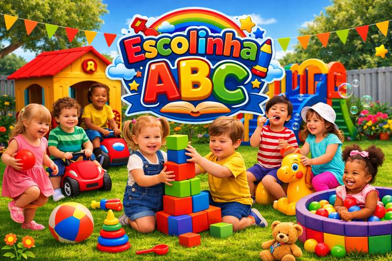
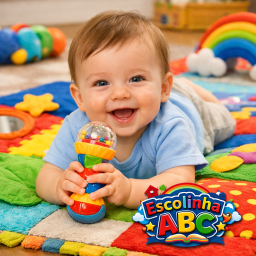
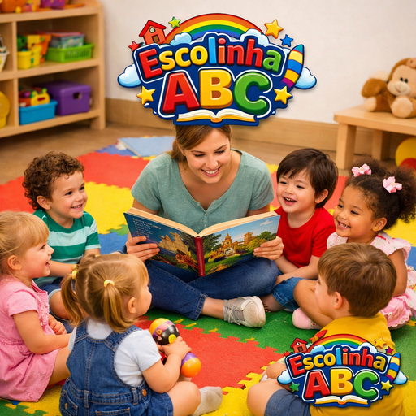
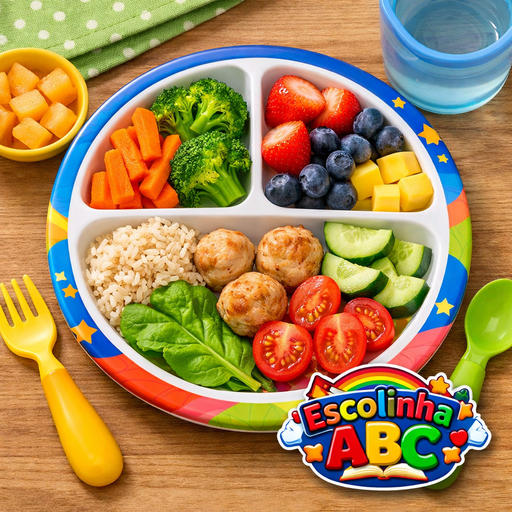

Missão
Promover o desenvolvimento global da criança em seus aspectos físicos, psicológicos, intelectuais e sociais, proporcionando experiências de aprendizagem significativas em estreita parceria com a família e a comunidade.
Na Escolinha ABC, proporcionamos um ambiente seguro, acolhedor e altamente estimulante para o desenvolvimento integral de bebês e crianças na primeira infância. Nossa equipe pedagógica é qualificada e dedicada a tornar cada dia uma nova descoberta educativa, promovendo o aprendizado de forma lúdica, afetuosa e integrada com as famílias.

Fundada com o compromisso de oferecer uma educação de excelência na primeira infância, a Escolinha ABC se orgulha de aliar o brincar livre à estimulação dirigida, respeitando rigorosamente o tempo e a individualidade de cada aluno. Acreditamos que a infância é a fase mais bonita e importante do desenvolvimento humano.
Promover o desenvolvimento global da criança em seus aspectos físicos, psicológicos, intelectuais e sociais, proporcionando experiências de aprendizagem significativas em estreita parceria com a família e a comunidade.
Ser reconhecida regionalmente como instituição de excelência e referência na educação infantil, destacando-se pelo acolhimento afetivo, instalações seguras e abordagens pedagógicas inovadoras.
Conheça os pilares que tornam o atendimento e a proposta pedagógica da Escolinha ABC únicos:


